pacman::p_load(ggstatsplot, tidyverse, knitr,
patchwork, ggthemes, ggdist,
car)Take-Home Exercise 1
Overview
The data used is a real-world vehicle insurance data from Spanish insurance company, comprising 354,140 policy records spanning from 2022 to 2024. The objective is to gain deeper insights into data distributions using univariate analysis and understand key factors influencing profitability and volatility using bivariate analysis. This technical report will cover the technical working of this project, such as data preprocessing and all analyses done.
Getting Started
Installing of required packages
Importing data
insurance <- read_delim("Motor_insurance.csv",
delim = ";",
col_types = cols(.default = "c"))Checking Dataset
Before cleaning, first examine the dataset’s structure, summary statistics, and missing values to identify any data quality issues.
glimpse(insurance)Rows: 354,140
Columns: 47
$ insured_id <chr> "1", "2", "2", "2", "3", "3", "3", "4", "4…
$ year <chr> "2022", "2022", "2023", "2024", "2022", "2…
$ policy_type <chr> "COMP_E", "COMP_E", "COMP_E", "COMP_E", "C…
$ policy_status <chr> "C", "A", "A", "A", "A", "A", "A", "A", "A…
$ business_type <chr> "NB", "P", "P", "P", "NB", "P", "P", "NB",…
$ payment_frequency <chr> "A", "A", "A", "A", "S", "S", "S", "A", "A…
$ bonus_score <chr> "G", "G", "G", "G", "G", "G", "G", "G", "G…
$ driver_age <chr> "48", "43", "44", "45", "45", "46", "47", …
$ vehicle_age <chr> "22", "24", "25", "26", "26", "27", "28", …
$ age_driving_licence <chr> "26", "19", "19", "18", "19", "19", "19", …
$ fuel_type <chr> "G", "D", "D", "D", "D", "D", "D", "D", "D…
$ vehicle_value <chr> "149511.4425", "65065.1232", "65065.1232",…
$ seats <chr> "4", "8", "8", "8", "7", "7", "7", "5", "5…
$ power_to_weight_ratio <chr> "3.92", "10.15", "10.15", "10.15", "9.19",…
$ vehicle_brand <chr> "PORSCHE", "MERCEDES", "MERCEDES", "MERCED…
$ municipality_type <chr> "I", "I", "I", "I", "I", "I", "I", "I", "I…
$ circulation_area <chr> "U", "U", "U", "U", "R", "R", "R", "R", "R…
$ total_premium <chr> "279.557557563945", "546.623415106849", "5…
$ liability_premium <chr> "30.6023237556165", "114.333356153425", "1…
$ property_damage_premium <chr> "121.912689768658", "303.105967487671", "3…
$ theft_premium <chr> "112.361488722247", "80.784823960274", "83…
$ fire_premium <chr> "3.83244054509589", "7.82686089041096", "6…
$ glass_premium <chr> "8.30578787063014", "30.091750730137", "32…
$ legal_protection_premium <chr> "2.04362162038356", "7.81274746849314", "7…
$ occupants_premium <chr> "0.499205281315068", "2.66790841643835", "…
$ total_claims <chr> "0", "0", "1", "2", "0", "0", "0", "0", "0…
$ liability_claims <chr> "0", "0", "1", "1", "0", "0", "0", "0", "0…
$ liability_property_claims <chr> "0", "0", "1", "1", "0", "0", "0", "0", "0…
$ liability_injury_claims <chr> "0", "0", "0", "0", "0", "0", "0", "0", "0…
$ property_claims <chr> "0", "0", "0", "1", "0", "0", "0", "0", "0…
$ theft_claims <chr> "0", "0", "0", "0", "0", "0", "0", "0", "0…
$ fire_claims <chr> "0", "0", "0", "0", "0", "0", "0", "0", "0…
$ glass_claims <chr> "0", "0", "0", "0", "0", "0", "0", "0", "0…
$ legal_protection_claims <chr> "0", "0", "0", "0", "0", "0", "0", "0", "0…
$ occupants_claims <chr> "0", "0", "0", "0", "0", "0", "0", "0", "0…
$ total_incurred <chr> "0", "0", "233.013", "2586.3615", "0", "0"…
$ liability_incurred <chr> "0", "0", "233.013", "1035", "0", "0", "0"…
$ liability_property_incurred <chr> "0", "0", "233.013", "1035", "0", "0", "0"…
$ liability_injury_incurred <chr> "0", "0", "0", "0", "0", "0", "0", "0", "0…
$ property_incurred <chr> "0", "0", "0", "1551.3615", "0", "0", "0",…
$ theft_incurred <chr> "0", "0", "0", "0", "0", "0", "0", "0", "0…
$ fire_incurred <chr> "0", "0", "0", "0", "0", "0", "0", "0", "0…
$ glass_incurred <chr> "0", "0", "0", "0", "0", "0", "0", "0", "0…
$ legal_protection_incurred <chr> "0", "0", "0", "0", "0", "0", "0", "0", "0…
$ occupants_incurred <chr> "0", "0", "0", "0", "0", "0", "0", "0", "0…
$ total_exposure <chr> "0.0986301369863014", "1", "1", "1", "1", …
$ liability_exposure <chr> "0.0986301369863014", "1", "1", "1", "1", …summary(insurance) insured_id year policy_type policy_status
Length:354140 Length:354140 Length:354140 Length:354140
Class :character Class :character Class :character Class :character
Mode :character Mode :character Mode :character Mode :character
business_type payment_frequency bonus_score driver_age
Length:354140 Length:354140 Length:354140 Length:354140
Class :character Class :character Class :character Class :character
Mode :character Mode :character Mode :character Mode :character
vehicle_age age_driving_licence fuel_type vehicle_value
Length:354140 Length:354140 Length:354140 Length:354140
Class :character Class :character Class :character Class :character
Mode :character Mode :character Mode :character Mode :character
seats power_to_weight_ratio vehicle_brand municipality_type
Length:354140 Length:354140 Length:354140 Length:354140
Class :character Class :character Class :character Class :character
Mode :character Mode :character Mode :character Mode :character
circulation_area total_premium liability_premium
Length:354140 Length:354140 Length:354140
Class :character Class :character Class :character
Mode :character Mode :character Mode :character
property_damage_premium theft_premium fire_premium
Length:354140 Length:354140 Length:354140
Class :character Class :character Class :character
Mode :character Mode :character Mode :character
glass_premium legal_protection_premium occupants_premium
Length:354140 Length:354140 Length:354140
Class :character Class :character Class :character
Mode :character Mode :character Mode :character
total_claims liability_claims liability_property_claims
Length:354140 Length:354140 Length:354140
Class :character Class :character Class :character
Mode :character Mode :character Mode :character
liability_injury_claims property_claims theft_claims
Length:354140 Length:354140 Length:354140
Class :character Class :character Class :character
Mode :character Mode :character Mode :character
fire_claims glass_claims legal_protection_claims
Length:354140 Length:354140 Length:354140
Class :character Class :character Class :character
Mode :character Mode :character Mode :character
occupants_claims total_incurred liability_incurred
Length:354140 Length:354140 Length:354140
Class :character Class :character Class :character
Mode :character Mode :character Mode :character
liability_property_incurred liability_injury_incurred property_incurred
Length:354140 Length:354140 Length:354140
Class :character Class :character Class :character
Mode :character Mode :character Mode :character
theft_incurred fire_incurred glass_incurred
Length:354140 Length:354140 Length:354140
Class :character Class :character Class :character
Mode :character Mode :character Mode :character
legal_protection_incurred occupants_incurred total_exposure
Length:354140 Length:354140 Length:354140
Class :character Class :character Class :character
Mode :character Mode :character Mode :character
liability_exposure
Length:354140
Class :character
Mode :character colSums(is.na(insurance))[colSums(is.na(insurance)) > 0] vehicle_age age_driving_licence fuel_type vehicle_value
2 2 1287 513 kable(head(insurance))| insured_id | year | policy_type | policy_status | business_type | payment_frequency | bonus_score | driver_age | vehicle_age | age_driving_licence | fuel_type | vehicle_value | seats | power_to_weight_ratio | vehicle_brand | municipality_type | circulation_area | total_premium | liability_premium | property_damage_premium | theft_premium | fire_premium | glass_premium | legal_protection_premium | occupants_premium | total_claims | liability_claims | liability_property_claims | liability_injury_claims | property_claims | theft_claims | fire_claims | glass_claims | legal_protection_claims | occupants_claims | total_incurred | liability_incurred | liability_property_incurred | liability_injury_incurred | property_incurred | theft_incurred | fire_incurred | glass_incurred | legal_protection_incurred | occupants_incurred | total_exposure | liability_exposure |
|---|---|---|---|---|---|---|---|---|---|---|---|---|---|---|---|---|---|---|---|---|---|---|---|---|---|---|---|---|---|---|---|---|---|---|---|---|---|---|---|---|---|---|---|---|---|---|
| 1 | 2022 | COMP_E | C | NB | A | G | 48 | 22 | 26 | G | 149511.4425 | 4 | 3.92 | PORSCHE | I | U | 279.557557563945 | 30.6023237556165 | 121.912689768658 | 112.361488722247 | 3.83244054509589 | 8.30578787063014 | 2.04362162038356 | 0.499205281315068 | 0 | 0 | 0 | 0 | 0 | 0 | 0 | 0 | 0 | 0 | 0 | 0 | 0 | 0 | 0 | 0 | 0 | 0 | 0 | 0 | 0.0986301369863014 | 0.0986301369863014 |
| 2 | 2022 | COMP_E | A | P | A | G | 43 | 24 | 19 | D | 65065.1232 | 8 | 10.15 | MERCEDES | I | U | 546.623415106849 | 114.333356153425 | 303.105967487671 | 80.784823960274 | 7.82686089041096 | 30.091750730137 | 7.81274746849314 | 2.66790841643835 | 0 | 0 | 0 | 0 | 0 | 0 | 0 | 0 | 0 | 0 | 0 | 0 | 0 | 0 | 0 | 0 | 0 | 0 | 0 | 0 | 1 | 1 |
| 2 | 2023 | COMP_E | A | P | A | G | 44 | 25 | 19 | D | 65065.1232 | 8 | 10.15 | MERCEDES | I | U | 548.752558109589 | 110.666890520548 | 304.955989890411 | 83.5213843561644 | 6.15146490410959 | 32.8616260273972 | 7.6556365479452 | 2.9395658630137 | 1 | 1 | 1 | 0 | 0 | 0 | 0 | 0 | 0 | 0 | 233.013 | 233.013 | 233.013 | 0 | 0 | 0 | 0 | 0 | 0 | 0 | 1 | 1 |
| 2 | 2024 | COMP_E | A | P | A | G | 45 | 26 | 18 | D | 65065.1232 | 8 | 10.15 | MERCEDES | I | U | 584.632429567398 | 122.092532497808 | 305.225092603562 | 107.886871891233 | 5.84289244602741 | 31.1015839652054 | 10.0841734339726 | 2.39928272958904 | 2 | 1 | 1 | 0 | 1 | 0 | 0 | 0 | 0 | 0 | 2586.3615 | 1035 | 1035 | 0 | 1551.3615 | 0 | 0 | 0 | 0 | 0 | 1 | 1 |
| 3 | 2022 | COMP_E | A | NB | S | G | 45 | 26 | 19 | D | 51626.6625 | 7 | 9.19 | KIA | I | R | 687.490507531134 | 214.583989098871 | 354.87413971463 | 53.077620195781 | 7.71576481002738 | 48.5742976882192 | 6.70070054334247 | 1.96399548026301 | 0 | 0 | 0 | 0 | 0 | 0 | 0 | 0 | 0 | 0 | 0 | 0 | 0 | 0 | 0 | 0 | 0 | 0 | 0 | 0 | 1 | 1 |
| 3 | 2023 | COMP_E | A | P | S | G | 46 | 27 | 19 | D | 51626.6625 | 7 | 9.19 | KIA | I | R | 693.670467952602 | 207.141298737699 | 393.289489861972 | 35.4689559170959 | 7.2754904079452 | 42.7005231749589 | 6.04677121249316 | 1.74793864043836 | 0 | 0 | 0 | 0 | 0 | 0 | 0 | 0 | 0 | 0 | 0 | 0 | 0 | 0 | 0 | 0 | 0 | 0 | 0 | 0 | 1 | 1 |
Problems
All features are now characters so need to change the data type of the numerical values into numeric.
Some features have nulls: vehicle_value has 513 NAs, fuel_type has 1287 NAs, fire_incurred has 94 NAs, occupants_incurred has 25 NAs.
Categoricals (policy_type, policy_status, business_type, payment_frequency, bonus_score, fuel_type, municipality_type, circulation_area, vehicle_brand) are stored as characters
instead of factors . With data type factors, R will understand that it is categoricals and not some string.
Data Wrangling
Cleaning the data
insurance <- insurance %>%
# Fix numerical columns' data type
mutate(across(c(insured_id, driver_age, vehicle_age,
age_driving_licence, vehicle_value,
seats, power_to_weight_ratio,
total_premium, total_claims,
liability_claims,
liability_property_claims,
liability_injury_claims, property_claims,
theft_claims, fire_claims, glass_claims,
legal_protection_claims, occupants_claims,
total_incurred, liability_incurred,
liability_property_incurred,
liability_injury_incurred,
property_incurred, theft_incurred,
fire_incurred, glass_incurred,
legal_protection_incurred,
occupants_incurred, liability_premium,
property_damage_premium, theft_premium,
fire_premium, glass_premium,
legal_protection_premium,
occupants_premium, total_exposure,
liability_exposure),
~ as.numeric(.))) %>%
# Convert categoricals to factors
mutate(across(c(policy_type, policy_status, business_type,
payment_frequency,bonus_score, fuel_type,
municipality_type, circulation_area,
vehicle_brand, year),
as.factor)) %>%
drop_na()
glimpse(insurance)Rows: 352,338
Columns: 47
$ insured_id <dbl> 1, 2, 2, 2, 3, 3, 3, 4, 4, 4, 5, 5, 5, 6, …
$ year <fct> 2022, 2022, 2023, 2024, 2022, 2023, 2024, …
$ policy_type <fct> COMP_E, COMP_E, COMP_E, COMP_E, COMP_E, CO…
$ policy_status <fct> C, A, A, A, A, A, A, A, A, A, A, A, A, A, …
$ business_type <fct> NB, P, P, P, NB, P, P, NB, P, P, NB, P, P,…
$ payment_frequency <fct> A, A, A, A, S, S, S, A, A, A, A, A, A, A, …
$ bonus_score <fct> G, G, G, G, G, G, G, G, G, G, G, G, G, G, …
$ driver_age <dbl> 48, 43, 44, 45, 45, 46, 47, 32, 33, 34, 39…
$ vehicle_age <dbl> 22, 24, 25, 26, 26, 27, 28, 12, 13, 14, 20…
$ age_driving_licence <dbl> 26, 19, 19, 18, 19, 19, 19, 19, 19, 19, 19…
$ fuel_type <fct> G, D, D, D, D, D, D, D, D, D, D, D, D, D, …
$ vehicle_value <dbl> 149511.44, 65065.12, 65065.12, 65065.12, 5…
$ seats <dbl> 4, 8, 8, 8, 7, 7, 7, 5, 5, 5, 5, 5, 5, 5, …
$ power_to_weight_ratio <dbl> 3.92, 10.15, 10.15, 10.15, 9.19, 9.19, 9.1…
$ vehicle_brand <fct> PORSCHE, MERCEDES, MERCEDES, MERCEDES, KIA…
$ municipality_type <fct> I, I, I, I, I, I, I, I, I, I, C, I, I, C, …
$ circulation_area <fct> U, U, U, U, R, R, R, R, R, R, R, U, U, R, …
$ total_premium <dbl> 279.5576, 546.6234, 548.7526, 584.6324, 68…
$ liability_premium <dbl> 30.60232, 114.33336, 110.66689, 122.09253,…
$ property_damage_premium <dbl> 121.9127, 303.1060, 304.9560, 305.2251, 35…
$ theft_premium <dbl> 112.361489, 80.784824, 83.521384, 107.8868…
$ fire_premium <dbl> 3.832441, 7.826861, 6.151465, 5.842892, 7.…
$ glass_premium <dbl> 8.305788, 30.091751, 32.861626, 31.101584,…
$ legal_protection_premium <dbl> 2.043622, 7.812747, 7.655637, 10.084173, 6…
$ occupants_premium <dbl> 0.4992053, 2.6679084, 2.9395659, 2.3992827…
$ total_claims <dbl> 0, 0, 1, 2, 0, 0, 0, 0, 0, 0, 0, 0, 0, 5, …
$ liability_claims <dbl> 0, 0, 1, 1, 0, 0, 0, 0, 0, 0, 0, 0, 0, 0, …
$ liability_property_claims <dbl> 0, 0, 1, 1, 0, 0, 0, 0, 0, 0, 0, 0, 0, 0, …
$ liability_injury_claims <dbl> 0, 0, 0, 0, 0, 0, 0, 0, 0, 0, 0, 0, 0, 0, …
$ property_claims <dbl> 0, 0, 0, 1, 0, 0, 0, 0, 0, 0, 0, 0, 0, 5, …
$ theft_claims <dbl> 0, 0, 0, 0, 0, 0, 0, 0, 0, 0, 0, 0, 0, 0, …
$ fire_claims <dbl> 0, 0, 0, 0, 0, 0, 0, 0, 0, 0, 0, 0, 0, 0, …
$ glass_claims <dbl> 0, 0, 0, 0, 0, 0, 0, 0, 0, 0, 0, 0, 0, 0, …
$ legal_protection_claims <dbl> 0, 0, 0, 0, 0, 0, 0, 0, 0, 0, 0, 0, 0, 0, …
$ occupants_claims <dbl> 0, 0, 0, 0, 0, 0, 0, 0, 0, 0, 0, 0, 0, 0, …
$ total_incurred <dbl> 0.000, 0.000, 233.013, 2586.361, 0.000, 0.…
$ liability_incurred <dbl> 0.000, 0.000, 233.013, 1035.000, 0.000, 0.…
$ liability_property_incurred <dbl> 0.000, 0.000, 233.013, 1035.000, 0.000, 0.…
$ liability_injury_incurred <dbl> 0.000, 0.000, 0.000, 0.000, 0.000, 0.000, …
$ property_incurred <dbl> 0.000, 0.000, 0.000, 1551.361, 0.000, 0.00…
$ theft_incurred <dbl> 0, 0, 0, 0, 0, 0, 0, 0, 0, 0, 0, 0, 0, 0, …
$ fire_incurred <dbl> 0, 0, 0, 0, 0, 0, 0, 0, 0, 0, 0, 0, 0, 0, …
$ glass_incurred <dbl> 0, 0, 0, 0, 0, 0, 0, 0, 0, 0, 0, 0, 0, 0, …
$ legal_protection_incurred <dbl> 0, 0, 0, 0, 0, 0, 0, 0, 0, 0, 0, 0, 0, 0, …
$ occupants_incurred <dbl> 0, 0, 0, 0, 0, 0, 0, 0, 0, 0, 0, 0, 0, 0, …
$ total_exposure <dbl> 0.09863014, 1.00000000, 1.00000000, 1.0000…
$ liability_exposure <dbl> 0.09863014, 1.00000000, 1.00000000, 1.0000…colSums(is.na(insurance))[colSums(is.na(insurance)) > 0]named numeric(0)Feature Engineering
driving_experience
driving_experience is needed to get how long the driver has been driving for, which is more meaningful as compared to the age when the driver receives the driving licence.
First check if age_driving_licence means the year driving licence is issued or the age the driver got the driving licence.
insurance %>%
filter(age_driving_licence == 80) %>%
select(driver_age, age_driving_licence, year)# A tibble: 1 × 3
driver_age age_driving_licence year
<dbl> <dbl> <fct>
1 82 80 2024 Combining with the first row value shown in the head summary, it can be concluded that age_driving_licence is the age of the driver when driving licence is issued. Hence to get driving_experience the formula should be driver_age - age_driving_licence.
insurance <- insurance %>%
mutate(driving_experience =
driver_age - age_driving_licence)loss_ratio
This feature will show the ratio of total_incurred to total_premium. This is important as it is the standard insurance profitability metric.
insurance <- insurance %>%
mutate(loss_ratio = total_incurred / total_premium)There is a possibility that the total_premium is 0 which will produce Inf or NaN instead of a value, so check next.
sum(is.infinite(insurance$loss_ratio))[1] 1sum(is.nan(insurance$loss_ratio))[1] 48Since there is only a total of 49 values Inf or NaN, dropping rows with them is negligible.
insurance <- insurance %>%
mutate(loss_ratio = ifelse(is.infinite(loss_ratio) | is.nan(loss_ratio),
NA, loss_ratio)) %>%
drop_na(loss_ratio)
sum(is.infinite(insurance$loss_ratio))[1] 0sum(is.nan(insurance$loss_ratio))[1] 0nrow(insurance)[1] 352289Check final data
kable(head(insurance))| insured_id | year | policy_type | policy_status | business_type | payment_frequency | bonus_score | driver_age | vehicle_age | age_driving_licence | fuel_type | vehicle_value | seats | power_to_weight_ratio | vehicle_brand | municipality_type | circulation_area | total_premium | liability_premium | property_damage_premium | theft_premium | fire_premium | glass_premium | legal_protection_premium | occupants_premium | total_claims | liability_claims | liability_property_claims | liability_injury_claims | property_claims | theft_claims | fire_claims | glass_claims | legal_protection_claims | occupants_claims | total_incurred | liability_incurred | liability_property_incurred | liability_injury_incurred | property_incurred | theft_incurred | fire_incurred | glass_incurred | legal_protection_incurred | occupants_incurred | total_exposure | liability_exposure | driving_experience | loss_ratio |
|---|---|---|---|---|---|---|---|---|---|---|---|---|---|---|---|---|---|---|---|---|---|---|---|---|---|---|---|---|---|---|---|---|---|---|---|---|---|---|---|---|---|---|---|---|---|---|---|---|
| 1 | 2022 | COMP_E | C | NB | A | G | 48 | 22 | 26 | G | 149511.44 | 4 | 3.92 | PORSCHE | I | U | 279.5576 | 30.60232 | 121.9127 | 112.36149 | 3.832441 | 8.305788 | 2.043622 | 0.4992053 | 0 | 0 | 0 | 0 | 0 | 0 | 0 | 0 | 0 | 0 | 0.000 | 0.000 | 0.000 | 0 | 0.000 | 0 | 0 | 0 | 0 | 0 | 0.0986301 | 0.0986301 | 22 | 0.0000000 |
| 2 | 2022 | COMP_E | A | P | A | G | 43 | 24 | 19 | D | 65065.12 | 8 | 10.15 | MERCEDES | I | U | 546.6234 | 114.33336 | 303.1060 | 80.78482 | 7.826861 | 30.091751 | 7.812748 | 2.6679084 | 0 | 0 | 0 | 0 | 0 | 0 | 0 | 0 | 0 | 0 | 0.000 | 0.000 | 0.000 | 0 | 0.000 | 0 | 0 | 0 | 0 | 0 | 1.0000000 | 1.0000000 | 24 | 0.0000000 |
| 2 | 2023 | COMP_E | A | P | A | G | 44 | 25 | 19 | D | 65065.12 | 8 | 10.15 | MERCEDES | I | U | 548.7526 | 110.66689 | 304.9560 | 83.52138 | 6.151465 | 32.861626 | 7.655636 | 2.9395659 | 1 | 1 | 1 | 0 | 0 | 0 | 0 | 0 | 0 | 0 | 233.013 | 233.013 | 233.013 | 0 | 0.000 | 0 | 0 | 0 | 0 | 0 | 1.0000000 | 1.0000000 | 25 | 0.4246231 |
| 2 | 2024 | COMP_E | A | P | A | G | 45 | 26 | 18 | D | 65065.12 | 8 | 10.15 | MERCEDES | I | U | 584.6324 | 122.09253 | 305.2251 | 107.88687 | 5.842892 | 31.101584 | 10.084173 | 2.3992827 | 2 | 1 | 1 | 0 | 1 | 0 | 0 | 0 | 0 | 0 | 2586.361 | 1035.000 | 1035.000 | 0 | 1551.361 | 0 | 0 | 0 | 0 | 0 | 1.0000000 | 1.0000000 | 27 | 4.4239104 |
| 3 | 2022 | COMP_E | A | NB | S | G | 45 | 26 | 19 | D | 51626.66 | 7 | 9.19 | KIA | I | R | 687.4905 | 214.58399 | 354.8741 | 53.07762 | 7.715765 | 48.574298 | 6.700700 | 1.9639955 | 0 | 0 | 0 | 0 | 0 | 0 | 0 | 0 | 0 | 0 | 0.000 | 0.000 | 0.000 | 0 | 0.000 | 0 | 0 | 0 | 0 | 0 | 1.0000000 | 1.0000000 | 26 | 0.0000000 |
| 3 | 2023 | COMP_E | A | P | S | G | 46 | 27 | 19 | D | 51626.66 | 7 | 9.19 | KIA | I | R | 693.6705 | 207.14130 | 393.2895 | 35.46896 | 7.275490 | 42.700523 | 6.046771 | 1.7479386 | 0 | 0 | 0 | 0 | 0 | 0 | 0 | 0 | 0 | 0 | 0.000 | 0.000 | 0.000 | 0 | 0.000 | 0 | 0 | 0 | 0 | 0 | 1.0000000 | 1.0000000 | 27 | 0.0000000 |
The final dataset now have 352,289 rows remaining, and 48 columns in total with the new column made. The data types are also all correct.
Variable selection
Profitability is about how much profit the insurance company can make from a policy, which is addressed with loss_ratio. Volatility concerns the spread and unpredictability of losses, which can be addressed by total_incurred. As such the target variables are loss_ratio and total_incurred.
Other variables that can help explain profitability and volatility are listed on the table below
| Variable | Description | Purpose |
|---|---|---|
total_premium |
Revenue collected per policy | Provides context on income side of portfolio |
total_claims |
Number of claims made | Indicates claim frequency which directly drives costs |
driver_age |
Age of driver | Older or younger drivers may present different risk profiles |
vehicle_age |
Age of the insured vehicle | Older vehicles may be more probe to certain types of claims |
driving_experience |
Years of driving experience | More experienced drivers may have lower claim rates |
policy_type |
Types coverage held | Different coverage types carry different risk exposures and premium levels |
bonus_score |
Claims history indicator | Drivers with poor claims history are likely higher risk |
circulation_area |
Urban vs rural driving environment | Urban areas typically have higher accident rates |
Year will also be taken as the temporal variable to be observed.
Univariate Analysis
For univariate analysis, there are 2 types of models to be done based on if the values are numeric or categorical.
The numeric ones will use histogram and boxplot together. Histogram will be used to show the shape of the distribution. Boxplot will complement it by highlighting median, IQR and outliers. Both are combined using patchwork for a more complete view.
The categorical values will use bar chart. This type of graph is able to show frequency distribution of each level.
The table below will show the which features are numerical and categorical and the type of univariate analysis done.
| Variable | Type of value | Univariate analysis |
|---|---|---|
total_incurred |
Numerical | histogram + boxplot |
loss_ratio |
Numerical | histogram + boxplot |
total_premium |
Numerical | histogram + boxplot |
total_claims |
Numerical | histogram + boxplot |
driver_age |
Numerical | histogram + boxplot |
vehicle_age |
Numerical | histogram + boxplot |
driving_experience |
Numerical | histogram + boxplot |
policy_type |
Categorical | bar chart |
bonus_score |
Categorical | bar chart |
circulation_area |
Categorical | bar chart |
year |
Categorical | bar chart |
Distribution of target variables
summary(insurance$total_incurred) Min. 1st Qu. Median Mean 3rd Qu. Max.
0.0 0.0 0.0 208.4 0.0 571128.3 box_cost <- ggplot(insurance, aes(y = total_incurred, x = "")) +
geom_boxplot(outlier.colour="lightgreen") +
geom_point(aes(x = "",
y = mean(insurance$total_incurred)),
colour = "red",
size = 2,
shape = 18) +
coord_flip() +
scale_y_continuous(limits = c(-1e+05, 6e+05)) +
labs(title = "Distribution of Total Incurred (Cost)") +
theme_minimal() +
theme(
axis.text = element_blank(),
axis.ticks = element_blank(),
axis.title = element_blank(),
panel.grid.major = element_blank(),
plot.background = element_rect(fill="white",
colour="white")
)
hist_cost <- ggplot(insurance, aes(x = total_incurred)) +
geom_histogram(bins = 50,
colour = "grey25",
fill = "grey90") +
geom_vline(aes(xintercept = mean(total_incurred)),
color = "red", linetype = "dashed") +
geom_vline(aes(xintercept = median(total_incurred)),
color = "blue", linetype = "dashed") +
scale_x_continuous(limits = c(-1e+05, 6e+05)) +
labs(x = "total_incurred") +
theme_minimal() +
theme(
axis.text.y = element_blank(),
axis.title.y = element_blank(),
plot.background = element_rect(fill="white",
colour="white")
)
hbox <- (box_cost / hist_cost) +
plot_layout(heights = c(1.5, 3.5))
hbox & theme(plot.background = element_rect(fill="white",colour="white"))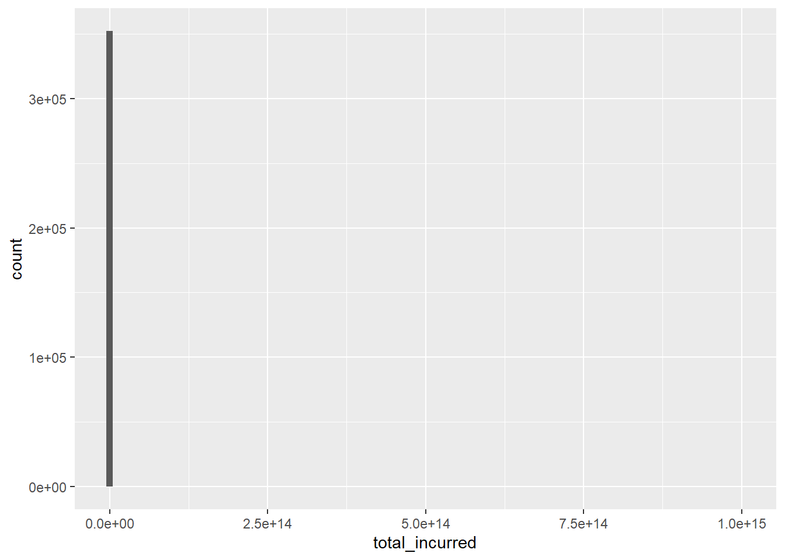
The distribution is heavily right-skewed with severe zero-inflation, as the median is 0 and the mean is 208.4. This indicates the majority of policies incurred no claims, with a small proportion of policies driving disproportinately high losses - a pattern typical in insurance portofolios.
summary(insurance$loss_ratio) Min. 1st Qu. Median Mean 3rd Qu. Max.
0.000 0.000 0.000 0.788 0.000 11348.859 insurance %>%
filter(loss_ratio > 100) %>%
select(total_premium, total_incurred, loss_ratio) %>%
arrange(desc(loss_ratio))# A tibble: 243 × 3
total_premium total_incurred loss_ratio
<dbl> <dbl> <dbl>
1 50.3 571128. 11349.
2 104. 289910. 2793.
3 17.8 43652. 2450.
4 5.66 11790. 2081.
5 17.4 35860. 2067.
6 156. 244091. 1560.
7 134. 182260. 1363.
8 287. 349389. 1217.
9 6.80 7102. 1045.
10 41.3 37801. 916.
# ℹ 233 more rows
Note
There are 243 policies with extreme loss ratios exceeding 100, indicating cases where claim cost far outweigh the premium collected. As these are outliers, the distribution is plotted within the range of 0 and 100 to better visualise the majority of policies.
box_ratio <- ggplot(insurance, aes(y = loss_ratio, x = "")) +
geom_boxplot(outlier.shape = NA) +
geom_point(aes(x = "",
y = mean(insurance$loss_ratio)),
colour = "red",
size = 2,
shape = 18) +
coord_flip() +
scale_y_continuous(limits = c(-1, 10)) +
labs(title = "Distribution of Loss Ratio") +
theme_minimal() +
theme(
axis.text = element_blank(),
axis.ticks = element_blank(),
axis.title = element_blank(),
panel.grid.major = element_blank(),
plot.background = element_rect(fill="white",
colour="white")
)
hist_ratio <- ggplot(insurance, aes(x = loss_ratio)) +
geom_histogram(colour = "grey25",
fill = "grey90") +
geom_vline(aes(xintercept = mean(loss_ratio)),
color = "red", linetype = "dashed") +
geom_vline(aes(xintercept = median(loss_ratio)),
color = "blue", linetype = "dashed") +
scale_x_continuous(limits = c(-1, 10)) +
labs(x = "loss_ratio") +
theme_minimal() +
theme(
axis.text.y = element_blank(),
axis.title.y = element_blank(),
plot.background = element_rect(fill="white",
colour="white")
)
hbox <- (box_ratio / hist_ratio) +
plot_layout(heights = c(1.5, 3.5))
hbox & theme(plot.background = element_rect(fill="white",colour="white"))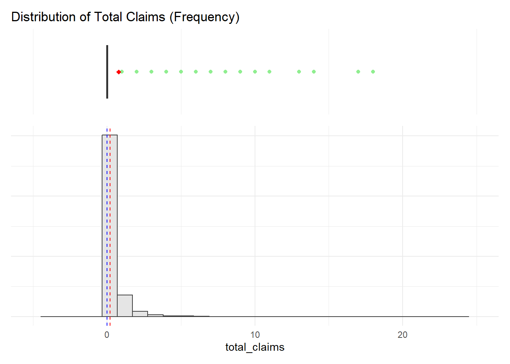
Similar to total_incurred, loss_ratio extreme right skew with a median of 0 and 243 policies exceeding a ratio of 100. The wide gap between mean (0.788) and median (0) suggest the average is heavily pulled by catastrophic outlier policies.
Distribution of other risk factors
summary(insurance$total_premium) Min. 1st Qu. Median Mean 3rd Qu. Max.
0.2662 146.0845 257.7510 296.2886 384.4315 5107.6399 box_rev <- ggplot(insurance, aes(y = total_premium, x = "")) +
geom_boxplot(outlier.colour="lightgreen") +
geom_point(aes(x = "",
y = mean(insurance$total_premium)),
colour = "red",
size = 2,
shape = 18) +
coord_flip() +
scale_y_continuous(limits = c(-500, 6000)) +
labs(title = "Distribution of Total Premium (Revenue)") +
theme_minimal() +
theme(
axis.text = element_blank(),
axis.ticks = element_blank(),
axis.title = element_blank(),
panel.grid.major = element_blank(),
plot.background = element_rect(fill="white",
colour="white")
)
hist_rev <- ggplot(insurance, aes(x = total_premium)) +
geom_histogram(bins = 50,
colour = "grey25",
fill = "grey90") +
geom_vline(aes(xintercept = mean(total_premium)),
color = "red", linetype = "dashed") +
geom_vline(aes(xintercept = median(total_premium)),
color = "blue", linetype = "dashed") +
scale_x_continuous(limits = c(-500, 6000)) +
labs(x = "total_premium") +
theme_minimal() +
theme(
axis.text.y = element_blank(),
axis.title.y = element_blank(),
plot.background = element_rect(fill="white",
colour="white")
)
hbox <- (box_rev / hist_rev) +
plot_layout(heights = c(1.5, 3.5))
hbox & theme(plot.background = element_rect(fill="white",colour="white"))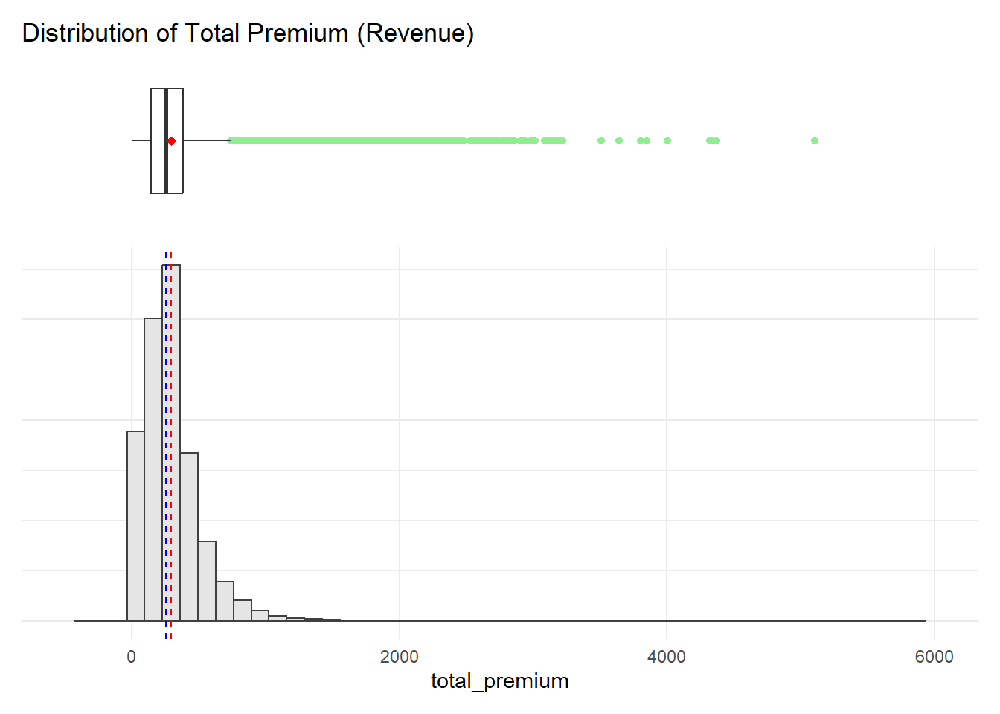
Premiums are right-skewed with a median of 257.75 and mean of 296.29, indicating most policies are moderately prices with a tail of hig-value policies. The distribution suggests a fairly broad but concentrated mid-range portfolio.
summary(insurance$total_claims) Min. 1st Qu. Median Mean 3rd Qu. Max.
0.0000 0.0000 0.0000 0.2173 0.0000 18.0000 box_claims <- ggplot(insurance, aes(y = total_claims, x="")) +
geom_boxplot(outlier.colour="lightgreen") +
geom_point(aes(x = "",
y = mean(insurance$total_claims)),
colour = "red",
size = 2,
shape = 18) +
coord_flip() +
scale_y_continuous(limits = c(-5, 25)) +
labs(title = "Distribution of Total Claims (Frequency)") +
theme_minimal() +
theme(
axis.text = element_blank(),
axis.ticks = element_blank(),
axis.title = element_blank(),
panel.grid.major = element_blank(),
plot.background = element_rect(fill="white",
colour="white")
)
hist_claims <- ggplot(insurance, aes(x = total_claims)) +
geom_histogram(colour = "grey25",
fill = "grey90") +
geom_vline(aes(xintercept = mean(total_claims)),
color = "red", linetype = "dashed") +
geom_vline(aes(xintercept = median(total_claims)),
color = "blue", linetype = "dashed") +
scale_x_continuous(limits = c(-5, 25)) +
labs(x = "total_claims") +
theme_minimal() +
theme(
axis.text.y = element_blank(),
axis.title.y = element_blank(),
plot.background = element_rect(fill="white",
colour="white")
)
hbox <- (box_claims / hist_claims) +
plot_layout(heights = c(1.5, 3.5))
hbox & theme(plot.background = element_rect(fill="white",colour="white"))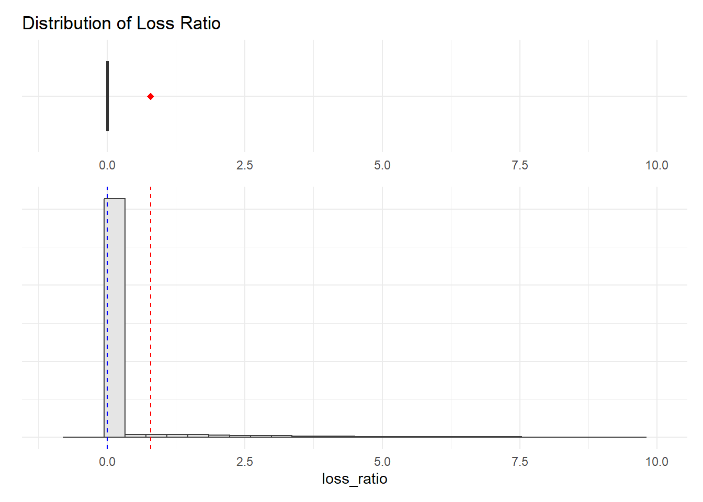
Like total_incurred, claim frequency is zero-inflated with a median of 0 and mean of 0.22, confirming that most policyholders make no claims within a given year.
summary(insurance$driver_age) Min. 1st Qu. Median Mean 3rd Qu. Max.
18.00 39.00 48.00 48.99 58.00 90.00 box_da <- ggplot(insurance, aes(y = driver_age, x="")) +
geom_boxplot(outlier.colour="lightgreen") +
geom_point(aes(x = "",
y = mean(insurance$driver_age)),
colour = "red",
size = 2,
shape = 18) +
coord_flip() +
scale_y_continuous(limits = c(15, 95)) +
labs(title = "Distribution of Driver's Age") +
theme_minimal() +
theme(
axis.text = element_blank(),
axis.ticks = element_blank(),
axis.title = element_blank(),
panel.grid.major = element_blank(),
plot.background = element_rect(fill="white",
colour="white")
)
hist_da <- ggplot(insurance, aes(x = driver_age)) +
geom_histogram(colour = "grey25",
fill = "grey90") +
geom_vline(aes(xintercept = mean(driver_age)),
color = "red", linetype = "dashed") +
geom_vline(aes(xintercept = median(driver_age)),
color = "blue", linetype = "dashed") +
scale_x_continuous(limits = c(15, 95)) +
labs(x = "driver_age") +
theme_minimal() +
theme(
axis.text.y = element_blank(),
axis.title.y = element_blank(),
plot.background = element_rect(fill="white",
colour="white")
)
hbox <- (box_da / hist_da) +
plot_layout(heights = c(1.5, 3.5))
hbox & theme(plot.background = element_rect(fill="white",colour="white"))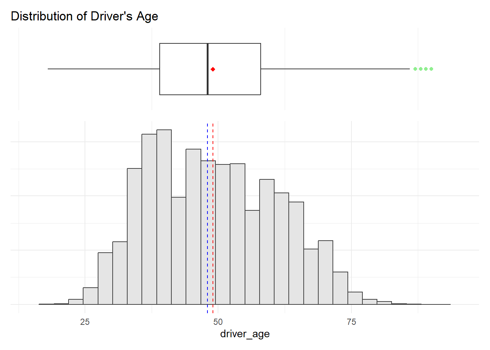
Driver age is approximately normally distributed with a median of 48 adn mean of 49, ranging from 18 to 90. The portfolio skews towards middle-aged and older driver, which may reflect lower-risk segments self-selecting into this insurer.
summary(insurance$vehicle_age) Min. 1st Qu. Median Mean 3rd Qu. Max.
0.00 17.00 25.00 25.91 35.00 68.00 box_va <- ggplot(insurance, aes(y = vehicle_age, x="")) +
geom_boxplot(outlier.colour="lightgreen") +
geom_point(aes(x = "",
y = mean(insurance$vehicle_age)),
colour = "red",
size = 2,
shape = 18) +
coord_flip() +
scale_y_continuous(limits = c(-5, 75)) +
labs(title = "Distribution of Vehicle Age") +
theme_minimal() +
theme(
axis.text = element_blank(),
axis.ticks = element_blank(),
axis.title = element_blank(),
panel.grid.major = element_blank(),
plot.background = element_rect(fill="white",
colour="white")
)
hist_va <- ggplot(insurance, aes(x = vehicle_age)) +
geom_histogram(colour = "grey25",
fill = "grey90") +
geom_vline(aes(xintercept = mean(vehicle_age)),
color = "red", linetype = "dashed") +
geom_vline(aes(xintercept = median(vehicle_age)),
color = "blue", linetype = "dashed") +
scale_x_continuous(limits = c(-5, 75)) +
labs(x = "vehicle_age") +
theme_minimal() +
theme(
axis.text.y = element_blank(),
axis.title.y = element_blank(),
plot.background = element_rect(fill="white",
colour="white")
)
hbox <- (box_va / hist_va) +
plot_layout(heights = c(1.5, 3.5))
hbox & theme(plot.background = element_rect(fill="white",colour="white"))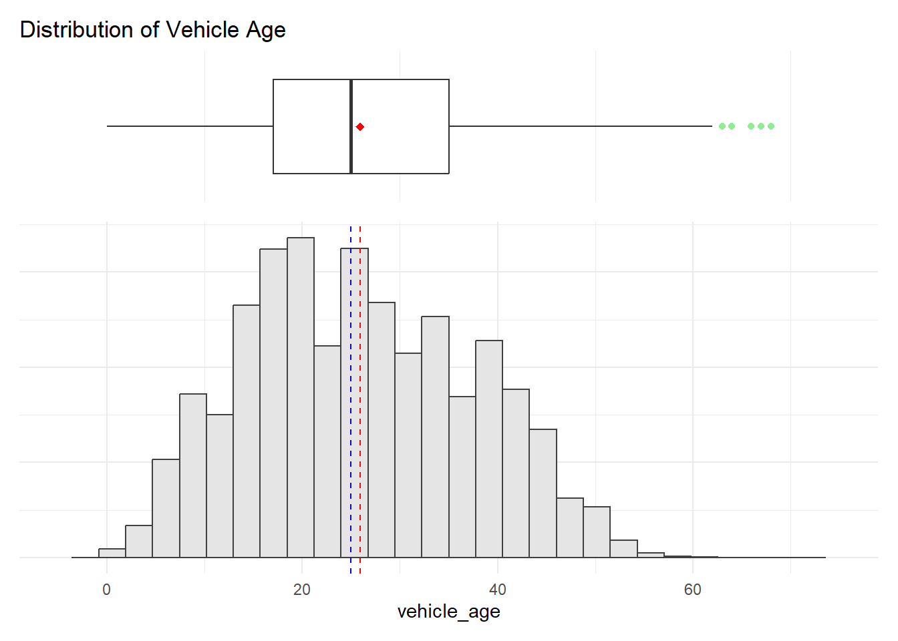
Vehicle age is broadly distributed with a median of 25 years and mean of 25.9, suggesting the portfolio is dominated by older vehicles. This i notable as older vehicles may have different risk profiles for certain claim types.
summary(insurance$driving_experience) Min. 1st Qu. Median Mean 3rd Qu. Max.
0 17 25 26 35 68 box_de <- ggplot(insurance, aes(y = driving_experience, x="")) +
geom_boxplot(outlier.colour="lightgreen") +
geom_point(aes(x = "",
y = mean(insurance$driving_experience)),
colour = "red",
size = 2,
shape = 18) +
coord_flip() +
scale_y_continuous(limits = c(-5, 75)) +
labs(title = "Distribution of Driving Experience") +
theme_minimal() +
theme(
axis.text = element_blank(),
axis.ticks = element_blank(),
axis.title = element_blank(),
panel.grid.major = element_blank(),
plot.background = element_rect(fill="white",
colour="white")
)
hist_de <- ggplot(insurance, aes(x = driving_experience)) +
geom_histogram(colour = "grey25",
fill = "grey90") +
geom_vline(aes(xintercept = mean(driving_experience)),
color = "red", linetype = "dashed") +
geom_vline(aes(xintercept = median(driving_experience)),
color = "blue", linetype = "dashed") +
scale_x_continuous(limits = c(-5, 75)) +
labs(x = "driving_experience") +
theme_minimal() +
theme(
axis.text.y = element_blank(),
axis.title.y = element_blank(),
plot.background = element_rect(fill="white",
colour="white")
)
hbox <- (box_de / hist_de) +
plot_layout(heights = c(1.5, 3.5))
hbox & theme(plot.background = element_rect(fill="white",colour="white"))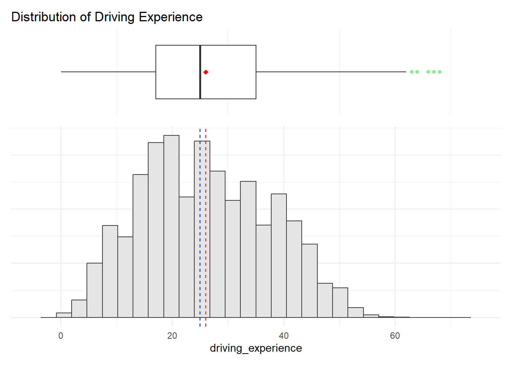
Driving experience closely mirrors vehicle age in distribution (median 25, mean 26), which is expected given it si derived from driver age. Most insured drivers are experienced, with the distribution peaking around 20-30 years of experience.
ggplot(data=insurance, aes(x = policy_type)) +
geom_bar(fill = "grey90") +
geom_text(stat="count",
aes(label=paste0(after_stat(count))),
vjust = -0.2,
size = 3) +
labs(title = "Distribution of Policy Types") +
theme_minimal() +
theme(
axis.text.y = element_blank(),
axis.title = element_blank(),
axis.ticks.y = element_blank(),
panel.grid.major = element_blank(),
plot.background = element_rect(fill="white",
colour="white")
)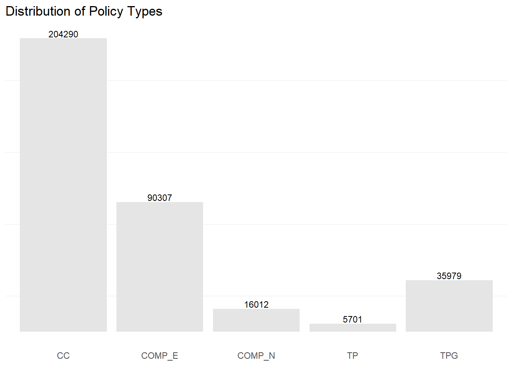
The portfolio is concentrated in a small number of policy types, with type CC being the most dominant. This shows limited product diversification.
ggplot(data=insurance, aes(x = bonus_score)) +
geom_bar(fill = "grey90") +
geom_text(stat="count",
aes(label=paste0(after_stat(count))),
vjust = -0.2,
size = 3) +
labs(title = "Distribution of Good, Bad, Neutral Claims") +
theme_minimal() +
theme(
axis.text.y = element_blank(),
axis.title = element_blank(),
axis.ticks.y = element_blank(),
panel.grid.major = element_blank(),
plot.background = element_rect(fill="white",
colour="white")
)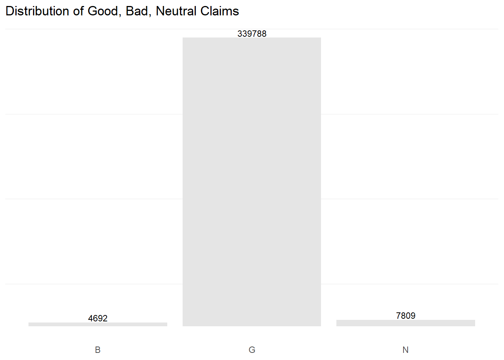
The majority of policyholders hold a “G” (good) bonus score, indicating a portfolio with predominantly low-risk claims history. Bad and neutral scores are a small minority.
ggplot(data=insurance, aes(x = circulation_area)) +
geom_bar(fill = "grey90") +
geom_text(stat="count",
aes(label=paste0(after_stat(count))),
vjust = -0.2,
size = 3) +
labs(title = "Distribution of Urban vs Rural") +
theme_minimal() +
theme(
axis.text.y = element_blank(),
axis.title = element_blank(),
axis.ticks.y = element_blank(),
panel.grid.major = element_blank(),
plot.background = element_rect(fill="white",
colour="white")
)
Urban and rural circulation environment are quite distributed, with urban being more dominant. This implies that the expected claim frequency for vehicles predominantely in the urban areas typically carry higher accident exposure.
ggplot(data=insurance, aes(x = year)) +
geom_bar(fill = "grey90") +
geom_text(stat="count",
aes(label=paste0(after_stat(count))),
vjust = -0.2,
size = 3) +
labs(title = "Distribution of Policy Record by Year") +
theme_minimal() +
theme(
axis.text.y = element_blank(),
axis.title = element_blank(),
axis.ticks.y = element_blank(),
panel.grid.major = element_blank(),
plot.background = element_rect(fill="white",
colour="white")
)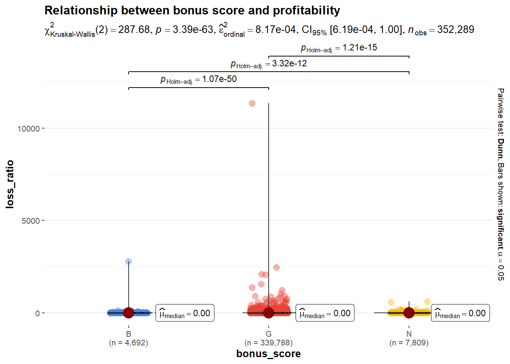
The dataset contains records across three years (2022–2024), with broadly similar policy counts per year. This suggests a stable portfolio size over the observation period, making year-on-year comparisons meaningful.
Bivariate Analysis
ggbetweenstats and ggscatterstats are used to do statistical bivariate analysis.
Relationship between bonus score and profitability
One-way ANOVA test is suitable to find the relationship between bonus score and profitability since bonus_score has more than 2 groups. But first check first if parametric or non-parametric using Shapiro test on loss_ratio.
# for reproducibility
set.seed(123)
shapiro.test(sample(insurance$loss_ratio, 5000))
Shapiro-Wilk normality test
data: sample(insurance$loss_ratio, 5000)
W = 0.12385, p-value < 2.2e-16Since result shows that it is significant, then Kruskal-Wallis test is used.
ggbetweenstats(
data = insurance,
x = bonus_score,
y = loss_ratio,
type = "np",
title = "Relationship between bonus score and profitability"
)
The Kruskal-Wallis test reveals a statically significant difference in loss ratios across bonus score groups. Policyholders with poor claims history (bad bonus score) tend to exhibit higher loss ratios, consistent with expectation that past claims behavior is a strong predictor of future profitability.
Relationship between policy type and profitability
One-way ANOVA is also used to find the relationship between policy type and profitability since policy_type has 5 groups. Since the Shapiro test of loss_ratio is significant, then the test done should be non-parametric Kruskal-Wallis test.
ggbetweenstats(
data = insurance,
x = policy_type,
y = loss_ratio,
type = "np",
title = "Relationship between policy type and profitability"
)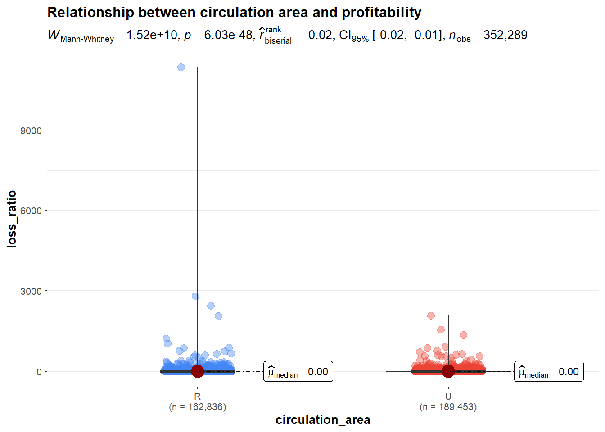
A statistically significant difference in loss ratios exists across policy types. Certain coverage types carry notably higher median loss ratios, suggesting that product mix is a meaningful driver of portfolio profitability.
Relationship between circulation area and profitability
Since circulation area only has 2 groups, the test done should be a two-sample test. In addition, since the Shapiro test for loss_ratio is significant, use the non-parametric version which is the Mann-Whitney U test.
ggbetweenstats(
data = insurance,
x = circulation_area,
y = loss_ratio,
type = "np",
title = "Relationship between circulation area and profitability"
)
The Mann-Whitney U test indicates a statistically significant difference in loss ratios between urban and rural policyholders. Urban policies tend toward higher loss ratios, consistent with the higher accident exposure in density populated areas.
Relationship between years of driving experience and profitability
Since driving experience is a numeric value, the test done should be a Significant Test of Correlation. This is done using ggscatterstats. Looking at the univariate analysis, even though driving_experience is normally distributed, loss_ratio is very skewed. So the non-parametric version is used instead, which is the Spearman’s rank correlation coefficient.
ggscatterstats(
data = insurance,
x = driving_experience,
y = loss_ratio,
type = "nonparametric",
title = "Relationship between years of driving experience and profitability"
)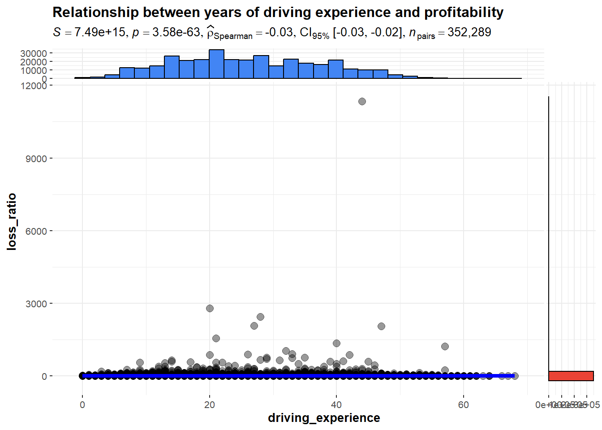
Spearman’s rank correlation reveals a weak but statistically significant negative relationship between driving experience and loss ratio. More experienecd drivers tend to have marginally lower loss ratios, though the effect size suggests experience alone is not a strong stabalone predictor.
Relationship between driver age and profitability
Driver age is also numeric value that is normally distributed based on the univariate analysis. However, loss_ratio is very skewed, so the test to be done should be Spearman’s rank correlation coefficient.
ggscatterstats(
data = insurance,
x = driver_age,
y = loss_ratio,
type = "nonparametric",
title = "Relationship between driver's age and profitability"
)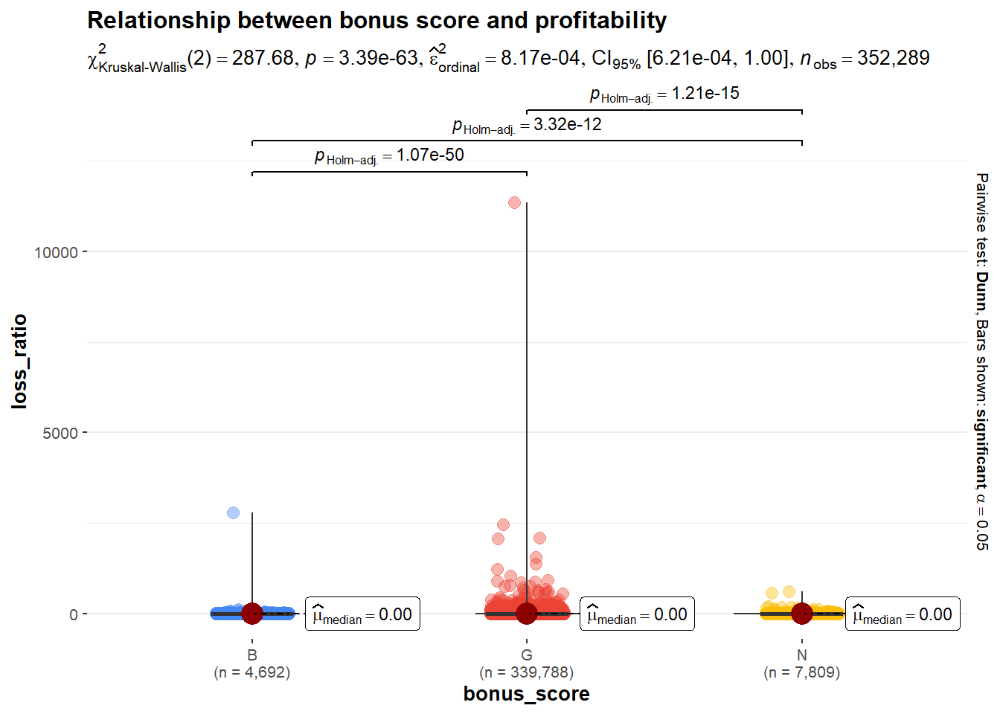
Spearman’s rank correlation reveals a statistically significant but weak relationship between driver age and loss ratio. The direction and effect size suggest age alone has limited standalone predictive power for profitability, though it may interact with other factors such as driving experience.
Relationship between vehicle age and profitability
Vehicle age is also numeric value that is normally distributed based on the univariate analysis. However, loss_ratio is very skewed, so the test to be done should be Spearman’s rank correlation coefficient.
ggscatterstats(
data = insurance,
x = vehicle_age,
y = loss_ratio,
type = "nonparametric",
title = "Relationship between vehicle age and profitability"
)
Spearman’s rank correlation shows a statistically significant relationship between vehicle age and loss ratio. Older vehicles tend to be associated with differing loss patterns, potentially reflecting differences in repair costs or the types of claims made on ageing vehicles.
Relationship between bonus score and volatility
# for reproducibility
set.seed(123)
shapiro.test(sample(insurance$total_incurred, 5000))
Shapiro-Wilk normality test
data: sample(insurance$total_incurred, 5000)
W = 0.17964, p-value < 2.2e-16Like against loss_ratio, One-Way ANOVA is used. Since, the Shapiro test shows total_incurred is significant which means total_incurred is not normally distributed. Therefore, non-parametric test, Kruskal-Wallis, is used.
ggbetweenstats(
data = insurance,
x = bonus_score,
y = total_incurred,
type = "np",
title = "Relationship between bonus score and volatility"
)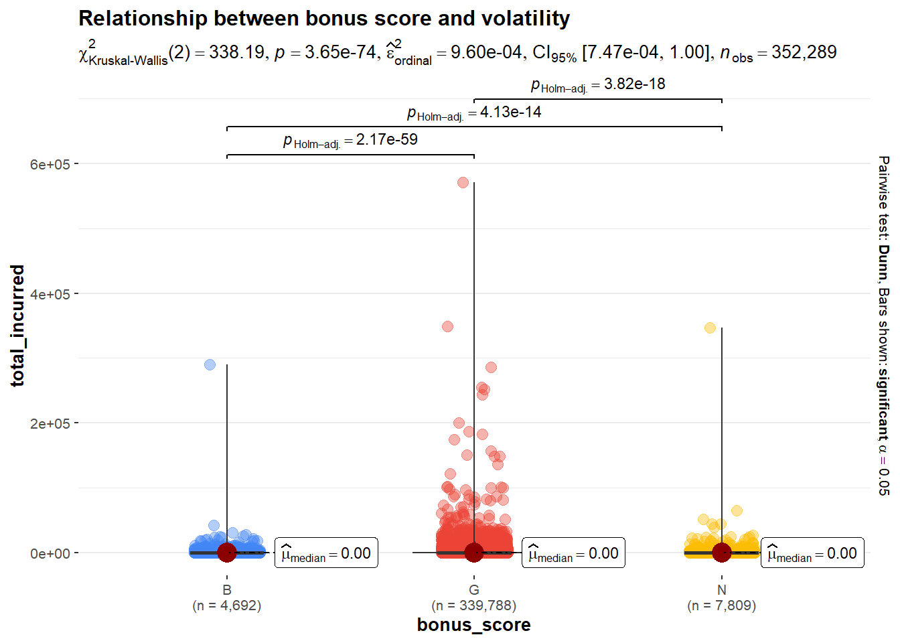
Similar to the profitability analysis, the Kruskal-Wallis test shows a significant difference in incurred costs across bonus score groups. Policyholders with poor claims history are associated with higher and more volatile incurred losses.
Relationship between policy type and volatility
Policy type as mentioned before has 5 groups and it is confirmed that total_incurred is not normally distributed from Shapiro test, therefore Kruskal-Wallis is used.
ggbetweenstats(
data = insurance,
x = policy_type,
y = total_incurred,
type = "np",
title = "Relationship between policy type and volatility"
)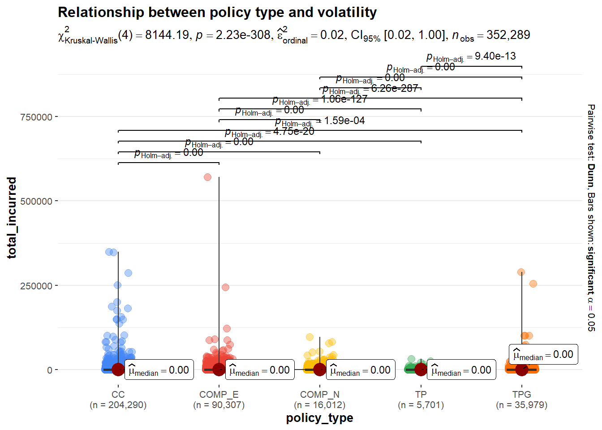
Significant difference in total incurred costs exist across policy types, mirroring the profitability findings. Certain policy types no only affect lsos ratios but also drive higher absolute claim costs, contributing to portfolio volatility.
Relationship between circulation area and volatility
Since circulation area only has 2 groups, the test done should be a two-sample test. In addition, since the total_incurred is not normally distributed, use the non-parametric version which is the Mann-Whitney U test.
ggbetweenstats(
data = insurance,
x = circulation_area,
y = total_incurred,
type = "np",
title = "Relationship between circulation area and volatility"
)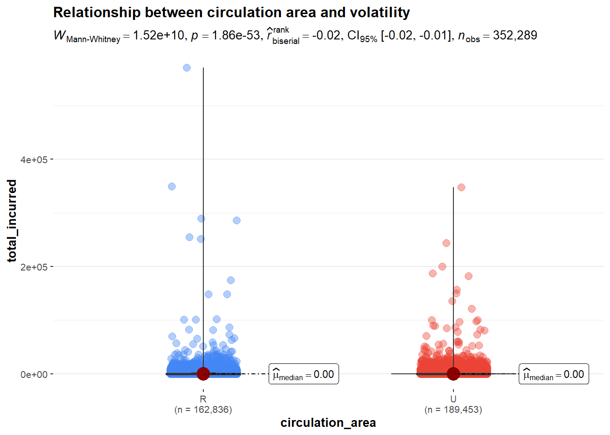
The Mann-Whitney U test indicates a statistically significant difference in total incurred costs between urban and rural policyholders. Urban policies are associated with higher incurred losses, consistent with greater accident exposure in densely populated areas, reinforcing the profitability finding.
Relationship between years of driving experience and volatility
Since driving experience is a numeric value and is normally distributed, but total_incurred is very skewed, Spearman’s rank correlation coefficient is done.
ggscatterstats(
data = insurance,
x = driving_experience,
y = total_incurred,
type = "nonparametric",
title = "Relationship between years of driving experience and volatility"
)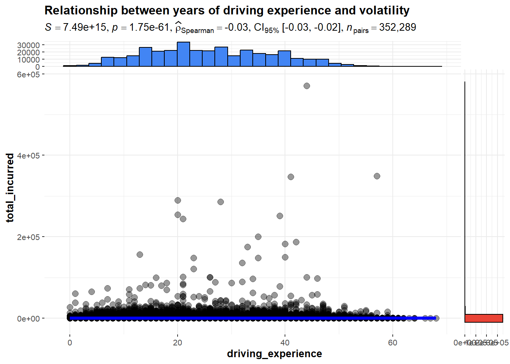
The Spearman correlation between driving experience and total incurred costs mirrors the profitability finding — a weak but statistically significant negative relationship. More experienced drivers tend to incur lower claim costs, though the effect size suggests it is not a dominant driver of volatility on its own.
Relationship between driver age and volatility
Driver age is also numeric value that is normally distributed based on the univariate analysis. However, total_incurred is very skewed, so Spearman’s rank correlation coefficient is done.
ggscatterstats(
data = insurance,
x = driver_age,
y = total_incurred,
type = "nonparametric",
title = "Relationship between driver's age and volatility"
)
Consistent with the profitability analysis, driver age shows a statistically significant but weak correlation with total incurred costs. The result suggests age has a modest influence on claim severity, likely working in conjunction with other risk factors.
Relationship between vehicle age and volatility
Vehicle age is also numeric value that is normally distributed. However, total_incurred is very skewed, so the test to be done should be Spearman’s rank correlation coefficient.
ggscatterstats(
data = insurance,
x = vehicle_age,
y = total_incurred,
type = "nonparametric",
title = "Relationship between vehicle age and volatility"
)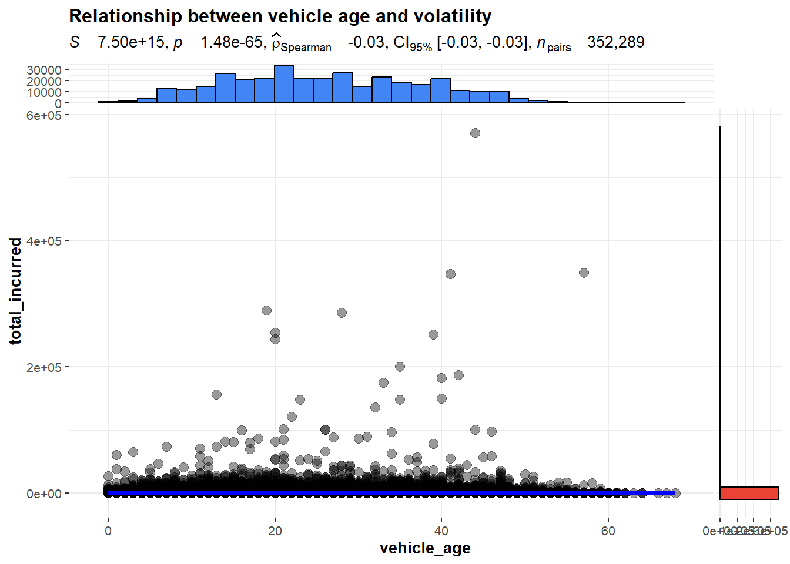
Vehicle age shows a statistically significant relationship with total incurred costs. Older vehicles appear associated with higher incurred losses, suggesting vehicle age contributes to claims volatility, possibly due to higher repair costs or increased mechanical vulnerability.
Temporal Analysis: Profitability and Volatility Across Years
To examine temporal trends, year is treated as a categorical grouping variable given only three time points are available (2022–2024). A line chart of mean and median values is first used to visualise the direction of change, followed by Kruskal-Wallis tests via ggbetweenstats to statistically validate whether differences across years are significant.
insurance %>%
group_by(year) %>%
summarise(mean_lr = mean(loss_ratio),
median_lr = median(loss_ratio)) %>%
pivot_longer(cols = c(mean_lr, median_lr),
names_to = "metric",
values_to = "value") %>%
ggplot(aes(x = year, y = value,
colour = metric, group = metric)) +
geom_line() +
geom_point() +
labs(title = "Mean and Median Loss Ratio by Year") +
theme_minimal()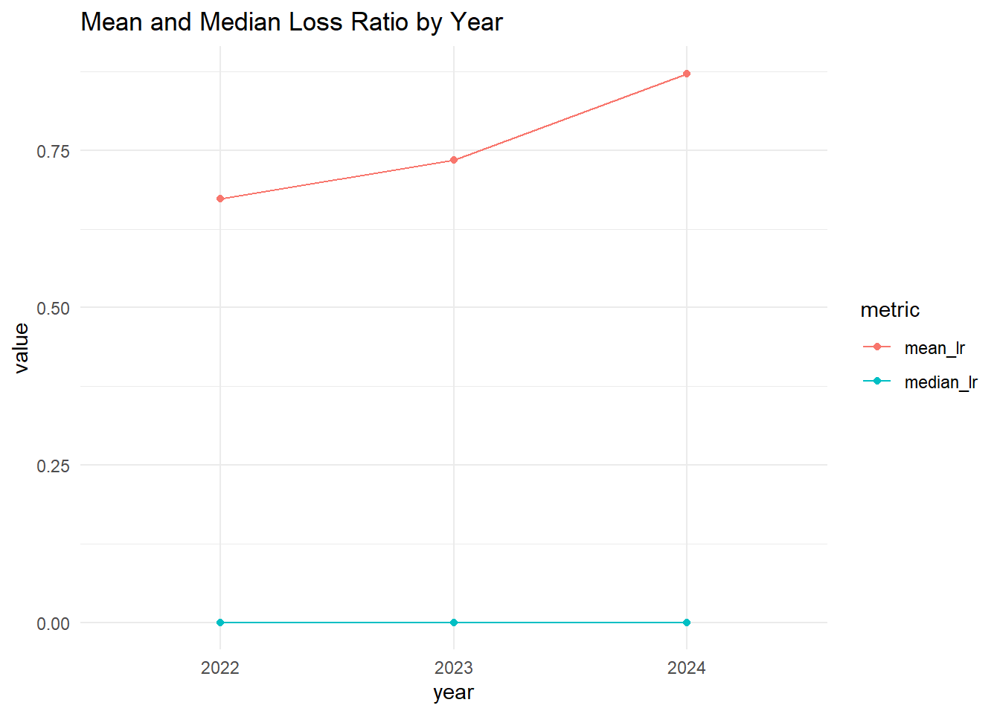
ggbetweenstats(
data = insurance,
x = year,
y = loss_ratio,
type = "np",
title = "Profitability across Years (2022–2024)"
)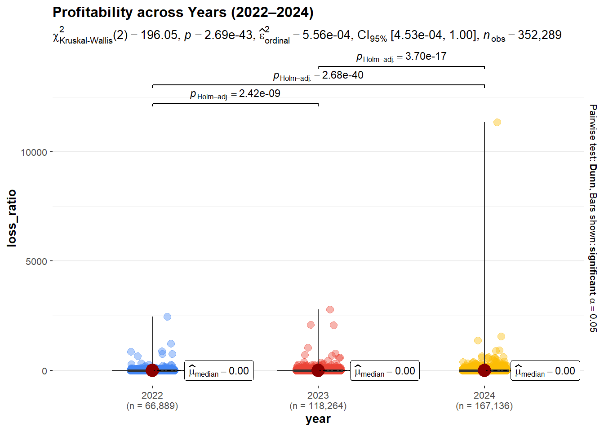
The mean loss ratio shows a consistent upward trend from 2022 to 2024 while the median remains at 0 across all years, indicating that rising averages are driven by outlier policies rather than broad portfolio deterioration. The Kruskal-Wallis test confirms this year-on-year difference is statistically significant (χ² = 196.05, p = 2.69e-43), with pairwise comparisons showing all three years differ significantly from each other.
insurance %>%
group_by(year) %>%
summarise(mean_ti = mean(total_incurred),
median_ti = median(total_incurred)) %>%
pivot_longer(cols = c(mean_ti, median_ti),
names_to = "metric",
values_to = "value") %>%
ggplot(aes(x = year, y = value,
colour = metric, group = metric)) +
geom_line() +
geom_point() +
labs(title = "Mean and Median Total Incurred by Year") +
theme_minimal()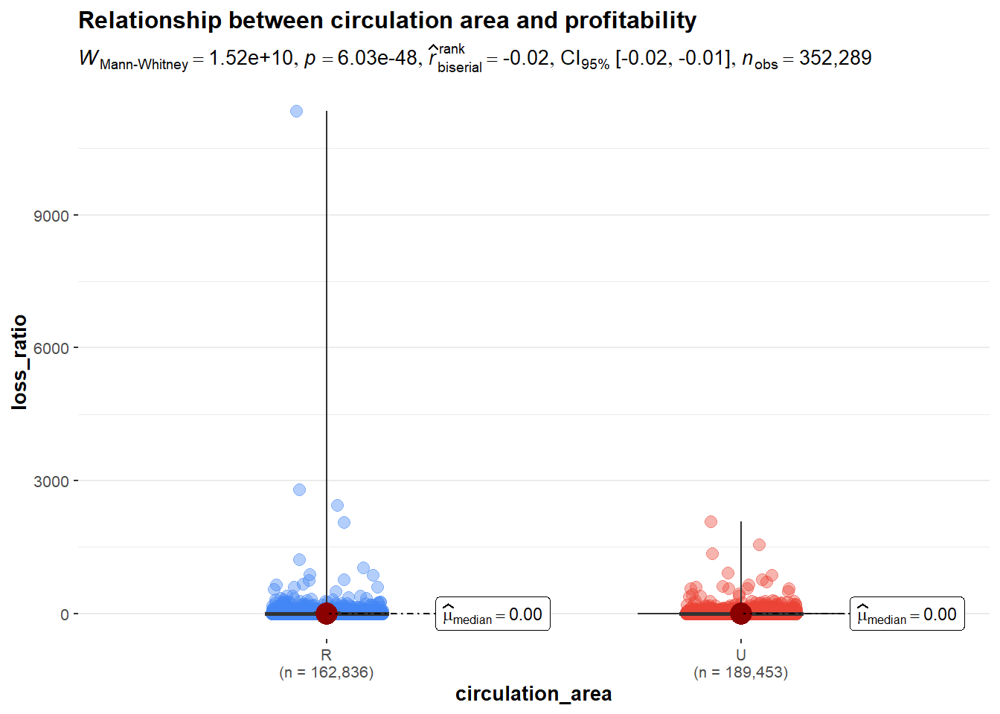
ggbetweenstats(
data = insurance,
x = year,
y = total_incurred,
type = "np",
title = "Volatility across Years (2022–2024)"
)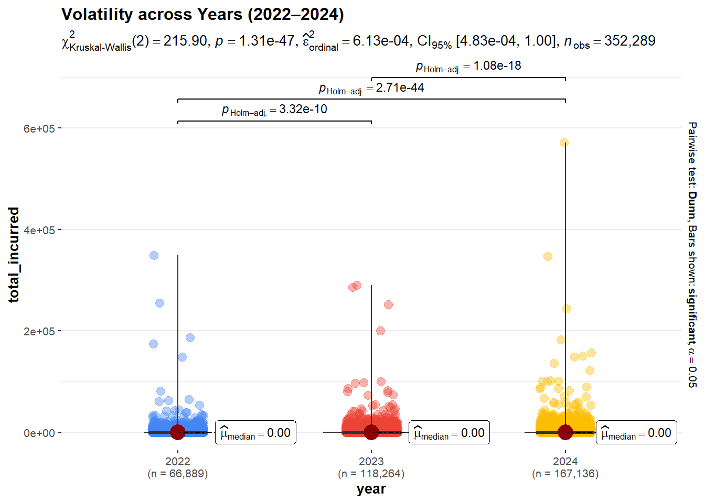
Mean total incurred costs similarly increase steadily from 2022 to 2024 while the median stays at 0, mirroring the loss ratio trend. The Kruskal-Wallis test confirms statistically significant differences across years (χ² = 215.90, p = 1.31e-47), with 2024 exhibiting the widest spread of extreme incurred values — suggesting claim severity has been worsening year on year.
Note
The significant difference in sample size across years — 2022 (n = 66,889), 2023 (n = 118,264), and 2024 (n = 167,136) — should be interpreted with caution, as the smaller 2022 sample may underrepresent the true distribution for that year.